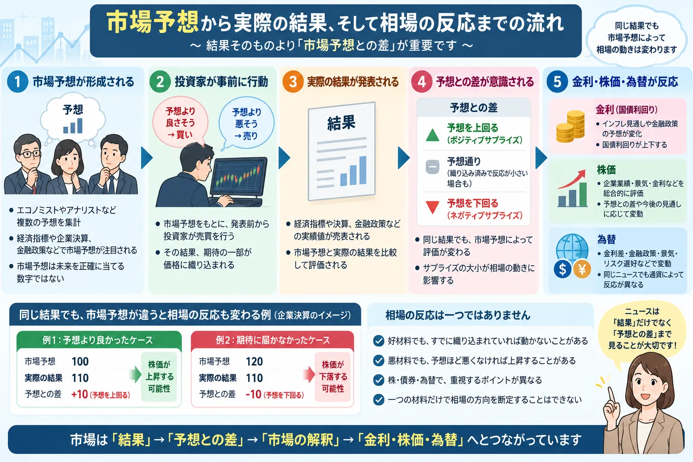

話題・トレンド
市場予想とは？好材料なのに株価が下がることがあるのはなぜ？初心者向けに解説
「決算は良かったのに株価が下がった」「雇用統計が強かったのに株安になった」「利下げしたのに相場が上がらない」。金融市場では、発表された結果そのものだけでなく、事前の市場予想と実際の結果との差が重要になります。
Overview
市場予想から株価・金利・為替へどうつながる？

Market Expectations
市場予想とは？
金融市場でいう市場予想とは、経済指標や企業決算、金融政策などが発表される前に、市場で共有されている予想の目安です。
経済指標
エコノミスト予想などを集計
CPI、雇用統計、GDPなどでは、複数のエコノミストによる予想を集計した「コンセンサス予想」が報道されることがあります。
企業決算
売上高・利益・EPSなどを予想
決算ではアナリストなどによる売上高、利益、EPS（1株当たり利益）などの予想が市場の比較対象になる場合があります。
市場予想は未来を正確に当てる数字ではありません。また、誰の予想を何件集計したか、平均値か中央値かなど、集計方法は情報提供会社や報道機関によって異なる場合があります。「市場参加者全員が同じ数字を予想している」という意味でもありません。
Expectation Gap
なぜ「結果」より「市場予想との差」が重要なの？
株価や国債、為替は、発表された情報だけを見て突然動き始めるわけではありません。投資家は将来を予想しながら事前に売買しているため、期待の一部が発表前から価格へ反映されている場合があります。
例A：予想より良かった
利益110は市場予想100を上回っています。市場から「予想より強かった」と受け止められる可能性があります。
例B：同じ利益110でも期待以下
会社が利益を出していても、市場予想120には届いていません。「利益は出たが期待には届かなかった」と評価される場合があります。
同じ「利益110」という結果でも、事前に市場が100を予想していたのか、120を予想していたのかで受け止め方は変わります。これが「良い数字なのに株価が下がる」現象を理解する重要なポイントです。
Priced In
「織り込み済み」とは？
「織り込み済み」とは、将来起こると予想されている出来事を見越して市場参加者が事前に売買し、その期待が価格へある程度反映されている状態を表す言葉です。
そのため「利下げされたのだから、発表後に必ず株価が上がる」とは限りません。市場が利下げをかなり前から予想していれば、発表時点では新しい情報が少ない場合があります。
「織り込み済み」は便利な表現ですが、実際には市場参加者ごとに予想もポジションも異なります。市場全体が完全に同じ出来事を100％織り込んでいると考えるのは避けたほうがよいでしょう。
Surprise
サプライズとは？
市場予想と実際の結果に大きな差が生じた場合、金融ニュースでは「サプライズ」という言葉が使われることがあります。
Positive Surprise
ポジティブサプライズ
決算や経済指標などが、市場が想定していた内容より好意的に受け止められる方向へ大きく外れた場合に使われます。
Negative Surprise
ネガティブサプライズ
市場が想定していた内容より悪い方向へ大きく外れた場合に使われます。
ただし、ポジティブサプライズだから必ず株高、ネガティブサプライズだから必ず株安になるわけではありません。例えば強い雇用統計が景気面では好材料でも、金利上昇への警戒につながることがあります。
Earnings
好決算なのに株価が下がるのはなぜ？
決算を見るときは「増収だった」「過去最高益だった」といった実績だけでなく、市場が事前に何を期待していたかも重要です。詳しい決算の読み方は「決算発表とは？なぜ株価が大きく動くの？」で解説しています。
- 売上高
- 営業利益などの利益
- EPS
- 会社予想
- ガイダンス
- 今後の成長率
市場が売上高より利益率を重視している場合や、今期実績より来期のガイダンスを重視している場合もあります。好決算＝必ず株価上昇ではありません。
Economic Data
良い経済指標なのに株価が下がるのはなぜ？
経済指標では「経済にとって良い数字」と「株式市場にとって短期的に好都合な数字」が一致しない場合があります。
このような局面は金融市場で「Good news is bad news（良いニュースが悪いニュースになる）」などと表現されることがあります。
ただし、強い経済指標が常に株安につながるわけではありません。インフレ環境、市場の金利予想、企業業績への期待などによって反応は変化します。
Inflation Data
CPI・PPI・PCEと市場予想
物価指標では、単に「前月より上がった・下がった」だけではなく、市場がどの程度の物価上昇・鈍化を予想していたかが重要です。
Employment Report
米国雇用統計と市場予想
米国雇用統計でも、市場予想との差が重要です。特に非農業部門雇用者数、失業率、平均時給などが注目されます。
雇用者数
雇用の増減
非農業部門雇用者数が市場予想を上回ったか下回ったかが注目されます。
失業率
労働市場の強弱
雇用者数だけでなく、失業率が市場予想からどう変化したかも確認されます。
平均時給
賃金とインフレ
賃金上昇率は家計所得だけでなく、インフレ圧力を考える材料としても注目されます。
さらに、前月や前々月の雇用者数が後から改定される場合があります。最新値だけを見るのではなく、複数の項目や過去分の改定も含めて市場が評価することがあります。
FOMC
FOMC・政策金利と市場予想
金融政策でも「利下げ＝株高」「利上げ＝株安」と単純に決まるわけではありません。市場は実際の決定より前から、次の政策変更を予想しています。
- FOMC声明
- 会見
- 今後の金利見通し
- 経済見通し
- インフレ評価
つまり重要なのは「今回何を決めたか」だけではなく、発表後に市場が今後の政策をどう予想し直したかです。金融政策の基本は「FOMCとは？」や「タカ派・ハト派とは？」もあわせて確認すると理解しやすくなります。
Rate Cuts
なぜ利下げしたのに株価が下がることがあるの？
織り込み
利下げが予想済みだった
発表前に利下げ期待で株価が上昇していれば、実際の利下げ発表時には新しい買い材料にならない場合があります。
期待との差
市場はもっと大きな利下げを期待していた
0.50％ポイントの利下げ期待が強い中で0.25％ポイントにとどまれば、利下げでも期待以下と受け止められる場合があります。
将来の政策
今後の利下げペースが遅い
今回利下げしても、次回以降の利下げに慎重な姿勢が示されれば市場の金利予想が上方修正されることがあります。
景気
利下げの理由が景気悪化
金融緩和自体よりも「中央銀行が景気悪化を強く警戒している」と市場が受け止める場合があります。
中央銀行の発言が市場予想よりタカ派的だった場合にも株価が下落することがあります。利下げ＝必ず株高ではありません。
Foreign Exchange
円高材料なのに円安になることがあるのはなぜ？
為替でも「実際に何が起きたか」だけではなく、事前予想との差が重要です。
- 国内金利
- 海外金利
- 金利差
- 将来の金融政策
- 景気
- リスク選好
- ポジション調整
そのため「利上げ＝必ず通貨高」という一般化はできません。発表時点の市場予想や海外の金融政策なども含めて確認する必要があります。
Market Reactions
株価・金利・為替がそれぞれ違う反応をするのはなぜ？
同じニュースを見ても、株式・債券・為替では重視するポイントが異なるため、同じ方向へ動くとは限りません。
株式
企業利益、景気、金利、バリュエーション、将来の成長率などを総合的に評価します。
債券・金利
インフレ、政策金利の見通し、景気、国債需給などが重要になります。債券市場の基本は「債券市場とは？」でも解説しています。
為替
二国間の金利差や金融政策予想、景気、リスク選好、資金フローなどが影響します。
Where to Check
市場予想はどこで確認できる？
ニュース
経済・金融ニュース
指標発表前の記事では、エコノミスト予想の集計値などが紹介される場合があります。
カレンダー
経済指標カレンダー
前回値、予想値、実績値を一覧で比較できるサービスがあります。
マーケット情報
証券会社などの情報
経済指標、決算、金融政策に関する予想や市場解説が掲載されることがあります。
一次情報
中央銀行・政府統計機関
発表後の実績値や正式な政策決定は、中央銀行や政府統計機関などの公式資料で確認できます。
公式機関が発表する「実績値」と、民間の情報提供会社・報道機関などが集計する「市場予想」は別の情報です。予想値を見るときは、誰がどのように集計した予想なのかも確認しましょう。
Beyond Headlines
「予想を上回った」だけで判断してはいけない理由
何の数字が予想を上回ったのか
売上高なのか、利益なのか、CPIなのか、雇用者数なのかを確認します。同じ「上振れ」でも意味は異なります。
市場がどの数字を重視していたのか
雇用統計でも雇用者数より平均時給が注目される局面などがあります。
前回値は改定されていないか
最新値が強くても、前回値が大幅に下方修正されていれば全体の印象が変わる場合があります。
将来見通しはどうなったか
企業決算では実績よりガイダンス、金融政策では今回の決定より今後の政策見通しが重視される場合があります。
金利予想がどう変化したか
強い経済指標を受けて利下げ期待が後退するなど、政策金利への予想変化が株・債券・為替へ波及することがあります。
すでに価格へ反映されていなかったか
結果が良くても、その結果を市場が十分期待していた場合は「材料出尽くし」のような動きになることがあります。
News Checklist
市場予想のニュースを見るときのポイント
-
市場予想はいくらだったか
まず発表前にどの程度の数字が想定されていたか確認します。
-
実際の結果はいくらだったか
予想値と実績値を同じ基準で比較します。
-
前回値はどうだったか
単月の数字だけでなく、それまでの流れも確認します。
-
前回値の改定はあったか
雇用統計などでは過去の数字が後から改定される場合があります。
-
何が市場予想との差を生んだか
内訳を見ることで、表面上の数字だけでは分からない背景を確認できます。
-
金利予想はどう変化したか
経済指標から中央銀行の政策予想へどう影響したかを確認します。
-
株・債券・為替はそれぞれどう反応したか
市場ごとの反応を見ると、投資家が何を重視したかを考える材料になります。
-
今後の見通しに変化はあったか
一度の発表だけでなく、その結果によって将来予想がどう変わったかを見ることが重要です。
「良い数字＝買い」「悪い数字＝売り」と単純に考えないことが重要です。「結果 → 予想との差 → 市場の解釈 → 金利・株・為替」という順番で見ると、ニュースを整理しやすくなります。
Latest Example
直近の市場予想と相場の例｜2026年9月FOMC
以下は2026年9月21日時点で確認できる情報をもとにした事例です。このセクションは金融政策や市場環境の変化に合わせて更新します。
発表直前には0.25％ポイントの利上げが強く予想されていた
2026年9月16日のFOMCを前に、Reutersは市場が0.25％ポイントの利上げを約93％の確率で織り込んでいたと報じていました。つまり、発表直前の段階では「利上げするかどうか」自体は市場にとって大きなサプライズになりにくい状況でした。
実際の決定も0.25％ポイントの利上げ
FRBは9月16日、フェデラルファンド金利の誘導目標を0.25％ポイント引き上げ、3.75～4.00％としました。FOMC声明では、経済活動は堅調なペースで拡大している一方、インフレは依然として高いとの認識が示されました。
米国株は発表後に下落
Reutersによると、9月16日の米国株はFOMC後に下落し、ダウ平均は1.21％安、S&P500は0.44％安となりました。同報道では、実際の利上げだけでなく、FRBがインフレ抑制へ追加の引き締めを行う可能性が意識されたことが市場反応の背景として挙げられています。
この事例は、「政策変更そのもの」と「その後の政策見通し」は別々に評価されることを示す例です。ただし、その日の株価はFOMCだけで決まったわけではありません。原油価格、地政学情勢、個別企業の材料、ポジション調整など複数の要因が同時に影響する可能性があります。
確認資料：
Federal Reserve「Federal Reserve issues FOMC statement」（2026年9月16日）
Reuters「Morning Bid: Warsh on collision course with Trump administration」（2026年9月16日）
Reuters「Wall St ends lower after Fed hikes interest rates, sees more tightening ahead」（2026年9月16日）
FAQ
市場予想に関するよくある質問
-
市場予想とは何ですか？
経済指標、企業決算、金融政策などが発表される前に、市場で共有されている予想の目安です。経済指標では複数のエコノミストの予想を集計したコンセンサス予想などが利用されます。未来を正確に当てる数字ではありません。 -
「市場予想を上回る」とはどういう意味ですか？
発表された実績値が事前の市場予想より高かったことを意味します。ただし、CPIなどでは「予想より高い」ことがインフレ警戒につながるため、必ずしも株式市場にとって好材料とは限りません。 -
「織り込み済み」とは何ですか？
将来起こると予想される出来事を見越して投資家が事前に売買し、その期待が価格へある程度反映されている状態です。実際に出来事が起きても、市場が大きく反応しない場合があります。 -
好決算なのに株価が下がるのはなぜですか？
増収増益でも市場予想に届かなかった場合、将来のガイダンスが期待を下回った場合、事前に高い期待が株価へ反映されていた場合などには下落することがあります。 -
良い経済指標なのに株価が下がるのはなぜですか？
強い経済指標がインフレや高金利の長期化への警戒につながると、国債利回り上昇などを通じて株価の重荷になる場合があります。ただし、強い指標が常に株安を引き起こすわけではありません。 -
利下げしたのに株価が下がることはありますか？
あります。利下げがすでに織り込まれていた場合、市場がもっと大幅な利下げを期待していた場合、今後の政策見通しが期待より引き締め的だった場合、景気悪化が警戒された場合などが考えられます。 -
利上げしたのに通貨が下がることはありますか？
あります。利上げがすでに予想されていた場合や、今後の追加利上げへの期待が後退した場合などには、利上げ後でも通貨が下落することがあります。 -
市場予想はどこで確認できますか？
経済ニュース、経済指標カレンダー、証券会社などのマーケット情報で確認できます。市場予想は民間などが集計している場合があるため、公式機関が発表する実績値とは区別し、予想値の集計元も確認することが大切です。
Related Articles
あわせて読みたい関連記事
Summary
まとめ｜「結果」だけでなく「予想との差」を見る
- 金融市場では、実際の結果だけでなく事前の市場予想との差が重要です。
- 投資家は発表前から行動するため、予想が価格へある程度反映される場合があります。
- 将来の予想が価格へ反映されている状態を「織り込み済み」と表現することがあります。
- 好材料でも市場予想に届かなければ、価格が下落する場合があります。
- 悪材料でも市場が予想していたほど悪くなければ、価格が上昇する場合があります。
- 経済指標では、その数字が将来の金融政策予想をどう変えるかまで見ることが重要です。
- 企業決算では過去の実績だけでなく、ガイダンスや将来の成長見通しも注目されます。
- 市場予想だけで株価・国債利回り・為替の方向を断定することはできません。
- 「結果 → 予想との差 → 市場の解釈 → 金利・株・為替」という順番でニュースを見ると理解しやすくなります。
Next Step
次の経済指標では「予想値」と「実績値」を比べてみよう
CPIや雇用統計、FOMC、企業決算のニュースを見たときは、結果だけでなく「市場は何を予想していたのか」を確認すると、値動きの背景を理解しやすくなります。
免責事項
本記事は、市場予想、経済指標、企業決算、金融政策、株価、国債利回り、為替などの仕組みを初心者向けに解説することを目的とした一般的な情報提供です。特定の金融商品・銘柄・通貨などの購入、売却、保有を推奨するものではありません。
市場予想は情報提供会社や報道機関などによって集計方法・対象・数値が異なる場合があります。また、市場価格は一つの材料だけではなく、経済指標、金融政策、企業業績、需給、地政学、投資家心理など複数の要因によって変動します。最新の実績値や政策決定は政府統計機関・中央銀行などの公式情報もご確認ください。